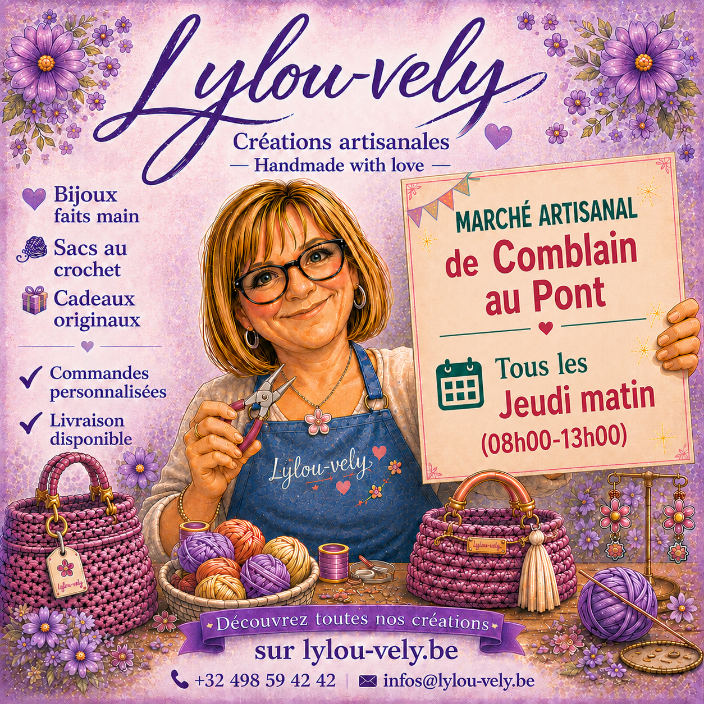
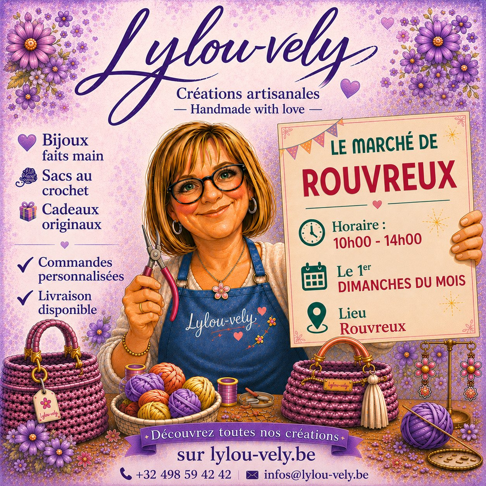
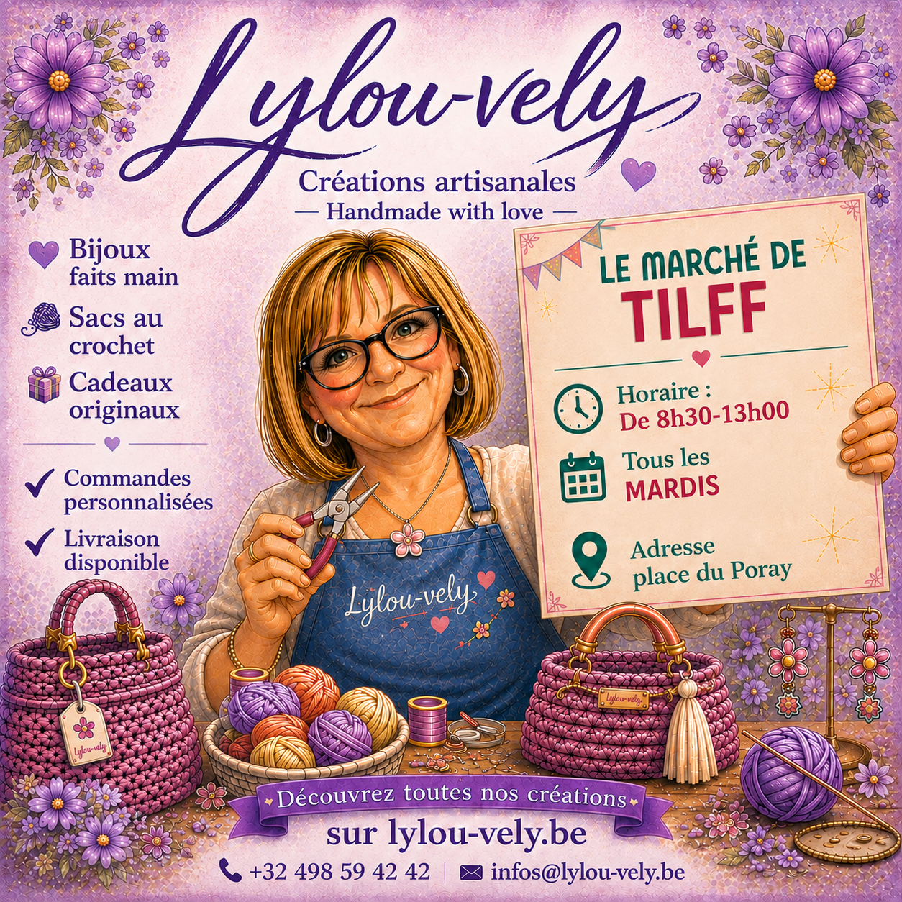
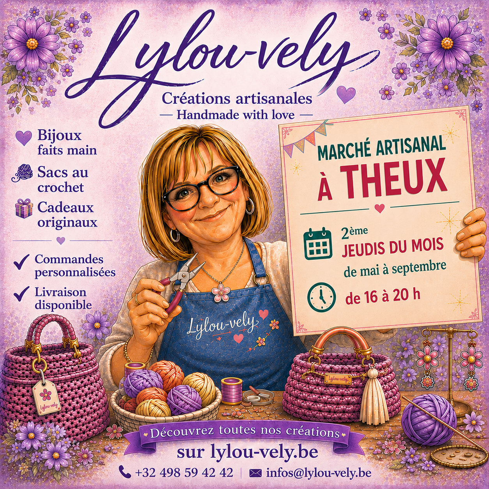

Hebdomadaire
🗺️ Voir sur Google Maps
Marché de
Comblain-au-Pont
Comblain-au-Pont
08h00 – 13h00
Tous les jeudis matin
Place Leblanc
4170 Comblain-au-Pont

1× par mois
🗺️ Voir sur Google Maps
Marché
de Rouvreux
de Rouvreux
10h00 – 14h00
1er dimanche du mois
Cour de la Rouvre
Rue Victor Forthomme, 4140 Sprimont
1× par mois
🗺️ Voir sur Google Maps
Marché
de Boncelles
de Boncelles
10h00 – 15h00
2ème dimanche du mois
Place de l'Église
4100 Boncelles

Hebdomadaire
🗺️ Voir sur Google Maps
Marché
de Tilff
de Tilff
8h30 – 13h00
Tous les mardis
Place du Poray, Tilff
Liège, Belgique
Saisonnier
🗺️ Voir sur Google Maps
Marché artisanal
à Theux
à Theux
16h00 – 20h00
2ème jeudi du mois — mai à septembre
Place de l'Église (Place du Monument)
En face de l'église, le long de la Rue de la Chaussée
4910 Theux
4910 Theux

Une question ? 💜
N'hésitez pas à me contacter pour savoir si je serai présente à un marché, ou pour passer une commande personnalisée !
Retrouvez toutes nos créations sur lylou-vely.be